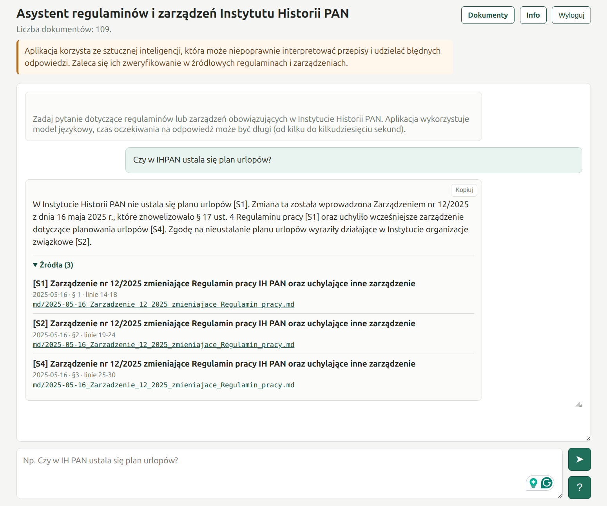
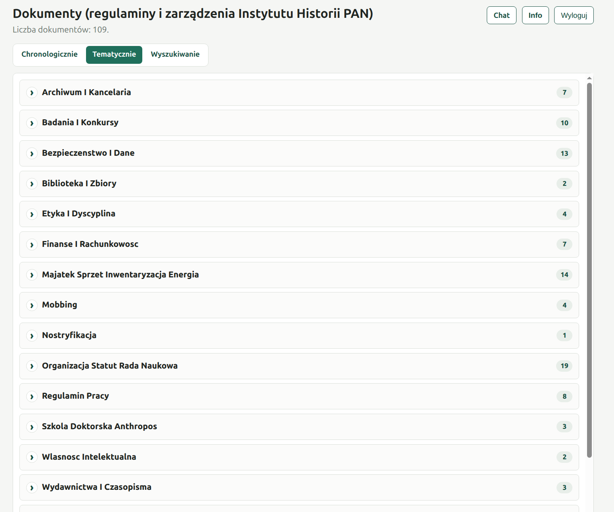
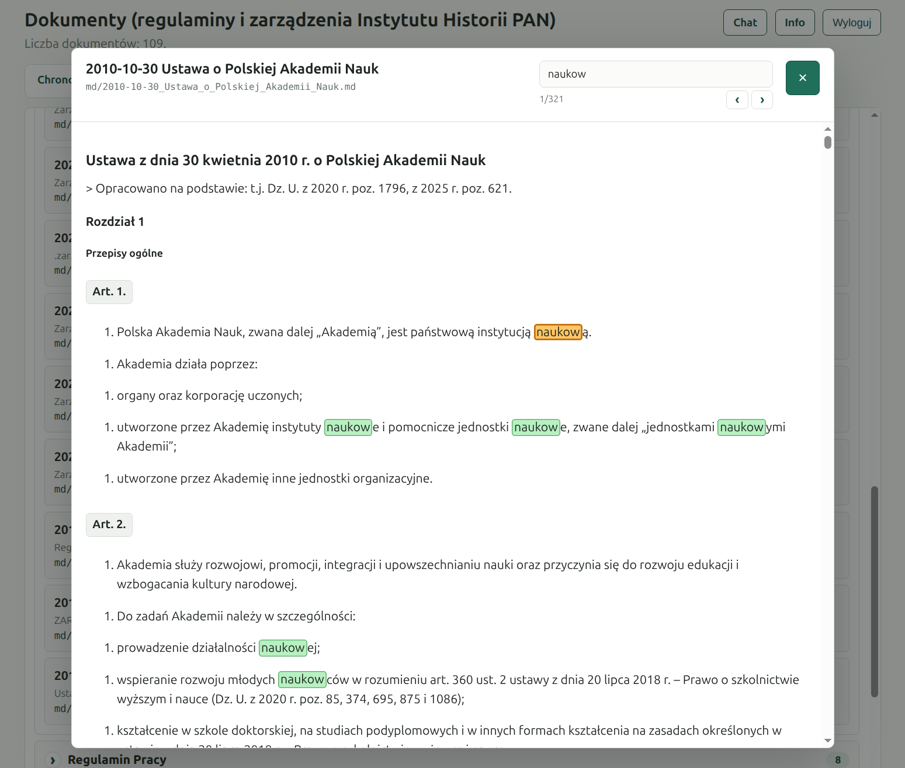
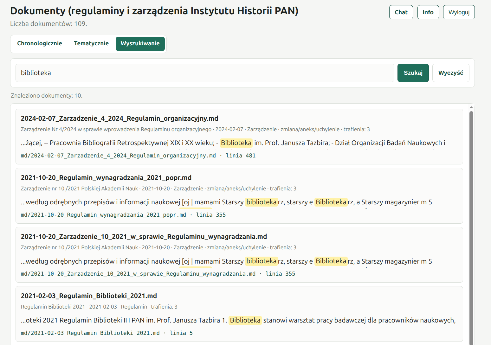

AI Assistant for Regulations and Orders
How it works
The application helps employees of the Tadeusz Manteuffel Institute of History, Polish Academy of Sciences, quickly find information in current regulations, orders, annexes and other internal documents. Users can ask questions in ordinary language, and the system searches for relevant passages and prepares an answer with references to the source documents.
The documents can also be browsed directly: chronologically, by topic, or through full-text search. In the thematic view, materials are grouped by issues such as work regulations, the social benefits fund, public procurement, the organisation of the Institute, the library, travel, and anti-mobbing procedures.
Chat:

The texts used by the application come from PDF and DOCX files available to Institute employees. Some of these files were scans, so they were automatically processed with OCR in order to extract the text. For this reason, the document texts may contain typos or other recognition errors.
The application is intended as a supporting tool. It makes it easier to navigate the documents and speeds up information retrieval, but it does not replace reading the relevant regulation or order, especially in matters that require precise interpretation.
Browsing documents by topic:

Searching within a document:

Search across multiple documents:

Application:
https://ai.ihpan.edu.pl/regulaminy/
Source code:
https://github.com/pjaskulski/regulaminy